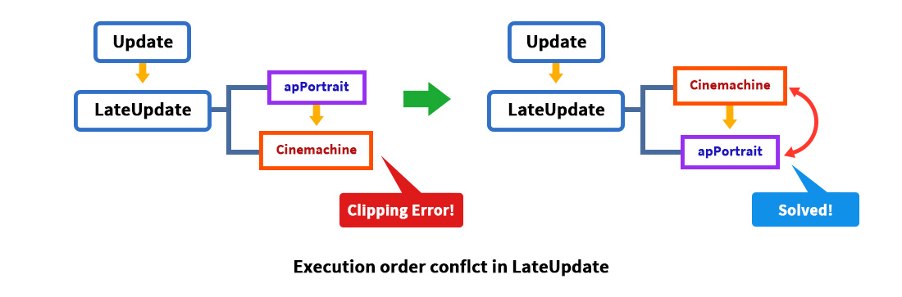
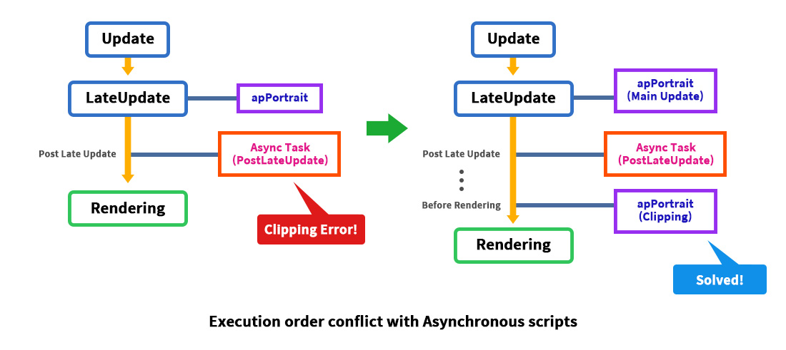
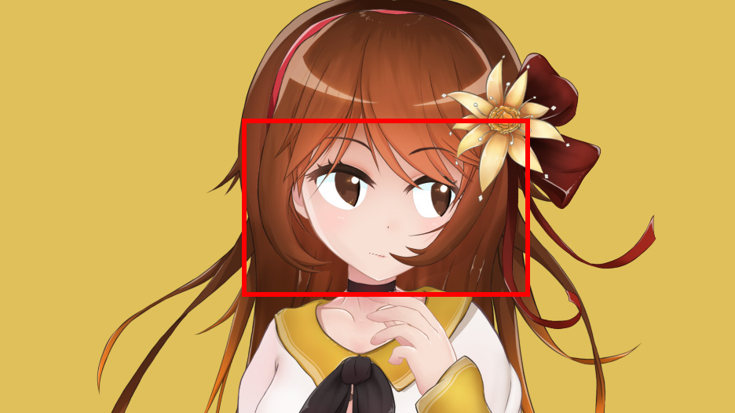

AnyPortrait > 메뉴얼 > 다른 에셋과 연동시 실행 순서 문제
다른 에셋과 연동시 실행 순서 문제
1.5.1
AnyPortrait와 다른 에셋 또는 스크립트가 같이 동작하면서 오작동을 일으키는 경우가 있습니다.
AnyPortrait가 "애니메이션"과 "렌더링"을 처리하므로, 스크립트의 실행 순서에 민감하기 때문입니다.
이 특성은 유니티의 물리나 애니메이션 시스템이 별도의 단계에서 처리되는 것과 같은 맥락입니다.
일반적인 구현 방식으로 스크립트를 작성한다면 이 규칙을 인지하지 않더라도 큰 문제없이 AnyPortrait를 다룰 수 있습니다.
반대로 이 규칙을 위반하는 특정 상황에서는 AnyPortrait가 제대로 동작하지 않을 수 있습니다.
"클리핑 메시"가 비정상적으로 렌더링되는 것은 이 이슈의 대표적인 현상입니다.
이 페이지에서는 시각적으로 확인하기 쉬운 "클리핑 메시의 렌더링 오류"를 예로 들어서 실행 순서에 대한 문제를 확인하고, 이에 대한 해결 방법을 알아봅니다.
안내
이 페이지에서는 "Cinemachine"과 "UniTask"을 예시로 설명을 합니다.
이 에셋들이 아니더라도, 유사한 작동 방식을 가지는 스크립트에 의해서 문제를 겪고 계시다면 이 페이지의 설명이 도움이 될 것입니다.
AnyPortrait가 정상적으로 동작하기 위한 실행 순서

AnyPortrait의 핵심 스크립트인 "apPortrait"는 다른 스크립트가 실행된 이후에 실행이 되어야 합니다.
이것은 크게 다음의 두가지 주요 이유 때문입니다.
- "애니메이션 재생"과 같은 스크립트 함수가 실행된 이후에 애니메이션 시스템이 동작해야 안정적인 결과를 볼 수 있습니다.
- 클리핑 메시 및 재질 제어와 같은 렌더링 처리를 위해서는 렌더링과 관련된 객체들의 동작이 완료된 상태여야 합니다.
일반적으로 대부분의 스크립트들이 Update 함수에서 동작하므로, 이 규칙을 지키기 위해서 AnyPortrait는 "LateUpdate"에서 동작합니다.
하지만 AnyPortrait의 동작에 영향을 주는 스크립트의 로직이 Update가 아닌 곳에서 실행된다면 문제가 발생할 수 있습니다.
외부 에셋이 LateUpdate에서 실행되는 경우
AnyPortrait의 스크립트인 "apPortrait"는 기본적으로 LateUpdate에서 동작합니다.
그래서 Update에서 실행되는 대부분의 다른 스크립트보다 항상 나중에 실행되기 때문에 안정적으로 동작합니다.
그런데 만약 메인 로직이 LateUpdate에서 동작하는 스크립트가 있다면, 실행 순서에 의한 문제가 발생할 수 있습니다.

카메라를 제어하는 유니티 에셋인 "Cinemachine"은 LateUpdate에서 동작하기 때문에, "클리핑 메시 렌더링 문제"가 발생하기 쉽습니다.
따라서 문제를 해결하기 위해서는 "스크립트 실행 순서 (Script Execution Order)" 옵션을 변경하여 오른쪽의 그림처럼 동작하도록 만들어야 합니다.

AnyPortrait의 데모에 Cinemachine을 연동한 화면입니다.
Cinemachine으로 카메라를 제어할 수 있습니다.

게임을 실행하면 AnyPortrait로 만든 캐릭터의 눈이 이상하게 렌더링됩니다.
AnyPortrait의 클리핑 마스크 (Clipping Mask) 기능이 제대로 동작하지 않는 것입니다.
AnyPortrait는 카메라의 위치, 방향, 설정에 따라서 렌더링을 어떻게 해야할지 결정합니다.
클리핑 마스크, 빌보드, Perspective 연산 등이 여기에 해당합니다.
그러나 Cinemachine으로 카메라를 제어하는 로직과 AnyPortrait의 카메라 계산 로직이 충돌하여 제대로 렌더링이 되지 않는 것입니다.
유사한 로직이 서로 충돌하는 경우, 대체로 AnyPortrait의 스크립트가 더 나중에 실행되도록 만들면 문제가 해결될 수 있습니다.
유니티의 메뉴에서 Edit > Project Settings에서 Script Execution Order를 실행합니다.
유니티 에디터의 버전에 따라서 위 화면과 다를 수 있지만, Project Settings을 실행하면 Script Execution Order 메뉴가 동일하게 존재합니다.

다른 에셋이 설치되었다면 Script Execution Order 화면에서 Default Time 외에 해당 에셋의 실행 순서가 추가되어 있을 수 있습니다.
Cinemachine의 스크립트가 Default Time보다 이후에 실행되도록 설정된 것을 위 화면에서 볼 수 있습니다.
AnyPortrait는 Cinemachine보다 나중에 스크립트가 실행되어야 합니다.
(1) + 버튼을 누릅니다.

AnyPortrait.apPortrait를 선택합니다.

AnyPortrait가 다른 에셋보다 나중에 실행되도록 만듭니다.
(1) 다른 에셋들보다 큰 값의 실행 순서를 입력합니다.
(2) Apply 버튼을 누릅니다.

게임을 실행하면 이제 문제가 해결되어 정상적으로 렌더링이 됩니다.
외부 에셋이 LateUpdate보다 나중에 실행되는 경우
1.5.1
MonoBehaviour의 기본 방식으로 스크립트가 실행이 된다면, 대부분 Update나 LateUpdate에서 로직이 실행될 것입니다.
그런데 비동기로 실행되는 스크립트나 에셋의 경우, 로직이 실행되는 시점을 MonoBehaviour의 생명 주기와 다르게 만들 수 있습니다.
"UniTask" 같은 라이브러리 및 이를 이용하는 에셋들("Naninovel" 등)이 여기에 해당합니다.

왼쪽의 이미지를 보시면, 비동기로 동작하는 스크립트의 로직이 LateUpdate보다 나중에 실행되는 경우를 볼 수 있습니다.
apPortrait보다 나중에 실행되기 때문에 실행 순서에 의한 문제가 발생할 것입니다.
이 경우엔 apPortrait가 해당 스크립트보다 더 뒤에 실행되도록 설정할 수 없기 때문에 문제를 해결하기가 쉽지 않습니다.
다만 발생하는 문제가 "클리핑 메시의 렌더링 오류"에 한정된다면 오른쪽과 같이 문제를 해결할 수 있습니다.
AnyPortrait v1.5.1에 추가된 옵션을 이용하여 "렌더링 직전"에 클리핑 메시를 갱신하도록 만들 수 있기 때문입니다.
다음은 비동기 스크립트 라이브러리 중 하나인 "UniTask"를 이용한 스크립트의 일부입니다.
- UniTask GitHub 페이지
void Start()
{
MoveCamera();
AsyncUpdateCamera().Forget();
}
private async UniTaskVoid AsyncUpdateCamera()
{
while ( Application.isPlaying && gameObject.activeInHierarchy)
{
await UniTask.Yield(PlayerLoopTiming.PostLateUpdate);
MoveCamera();
}
}
위 스크립트 예제는 LateUpdate보다 늦은 시점인 PostLateUpdate에서 카메라를 반복해서 움직이는 내용을 담고 있습니다.

위의 스크립트가 카메라를 움직이면, 실행 순서 규칙에 의해서 위와 같이 클리핑 메시가 비정상적으로 렌더링됩니다.

이 문제를 해결하기 위해서는 PostLateUpdate보다 더 늦은 시점에 클리핑 연산을 하도록 설정해야합니다.
(1) Bake 버튼을 누릅니다.
(2) Setting 탭을 선택합니다.
(3) Clipping Process 옵션의 값을 "Before Rendering"으로 변경합니다.
이 옵션은 업데이트 로직 중에서 "클리핑 연산"만 분리하여 따로 실행할지 여부를 결정합니다.
- In Update (Default) : 업데이트 로직 중에 클리핑 연산을 함께 수행합니다. 기본값입니다.
- Before Rendering : 모든 스크립트 업데이트가 완료된 후 렌더링 직전에 클리핑 연산을 수행합니다.

Bake를 하고 게임을 실행하면 클리핑 메시가 정상적으로 렌더링되는 것을 볼 수 있습니다.
Before Rendering 옵션은 문제를 해결하는 가장 쉽고 확실한 방법이지만, 권장되는 옵션은 아닙니다.
Before Rendering 단계는 업데이트가 아닌 렌더링에 해당하는 이벤트이며, 이때 실행되는 코드는 렌더링의 성능에 영향을 줍니다.
유니티에서 업데이트와 렌더링은 1:1로 대응되어 실행되는 것이 아니며, 렌더링 단계에서 불필요하게 많은 코드가 실행되면 입력 지연과 같은 문제가 발생합니다.
불가피한 상황이 아니라면 게임 로직은 업데이트 단계에서 실행되도록 만들어야 합니다.
다른 에셋과의 호환성에 관하여
AnyPortrait는 기본적인 유니티의 메시 렌더러(Mesh Renderer)에 관한 에셋이므로,
유니티의 기본적인 기능이나 일반적인 에셋들과의 호환성을 어느정도 가지고 있습니다.
그렇지만 유니티의 최신 기능이나 다양한 에셋들은 점점 더 다양해지고 전문화되면서 호환성을 보장하지 못할 수 있습니다.
저희 팀에게 해당 기능이나 에셋과의 호환성을 문의 주신다면, 저희가 확인하여 안내해드리겠습니다.
필요한 경우 저희팀은 그 이슈에 대해서 업데이트에 반영하겠습니다.
- 문의 페이지